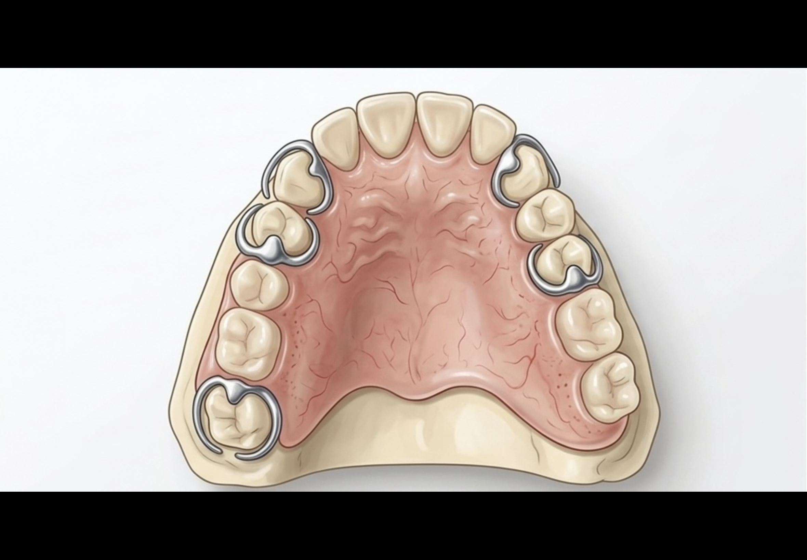
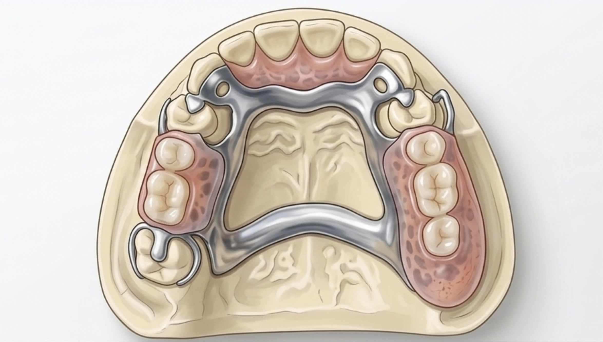
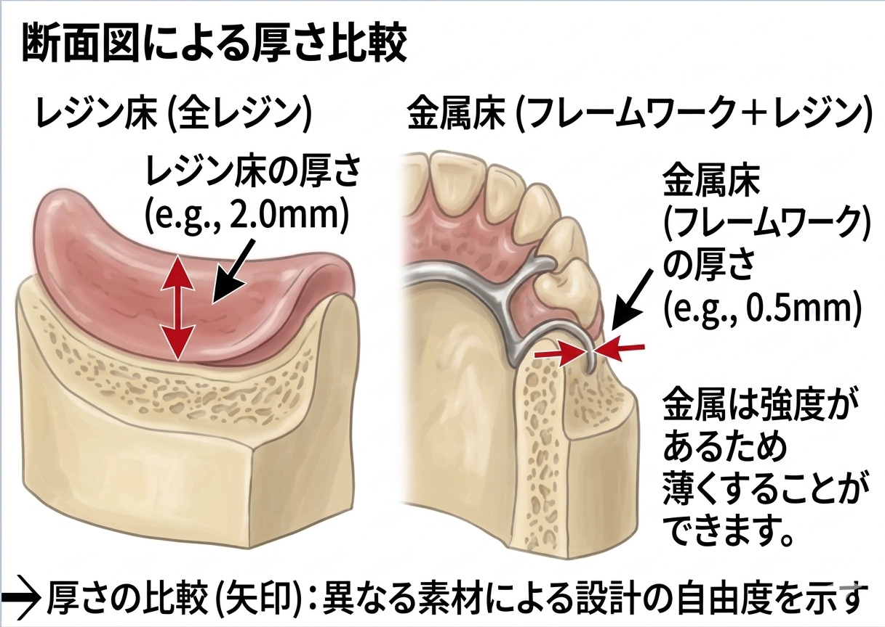

保険の入れ歯と自費の入れ歯の違い（見た目）
保険の入れ歯は金属のバネ（クラスプ）を歯にかけて固定するため、 口を開けたときに金属が見えることがあります。
自費の入れ歯では金属を見えにくく設計することができ、 見た目が自然で目立ちにくい入れ歯を作ることが可能です。
出雲市で噛みやすい入れ歯をご提供します
患者さま一人ひとりの噛み合わせや顎の状態を考慮し、調整を重ねながら快適な入れ歯を作製します。
保険の入れ歯は金属のバネ（クラスプ）を歯にかけて固定するため、 口を開けたときに金属が見えることがあります。
自費の入れ歯では金属を見えにくく設計することができ、 見た目が自然で目立ちにくい入れ歯を作ることが可能です。

保険の入れ歯は強度を保つため、ある程度の厚みのあるプラスチック（ピンクの部分）で作られます。

自費の入れ歯では金属のフレームを使用することで薄く作ることができるため、

といったメリットがあります。
見た目・装着感ともに、より自然で快適な入れ歯をご希望の方には自費診療の入れ歯がおすすめです。
入れ歯に関するお悩みはお気軽にご相談ください。